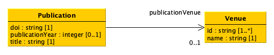

6. Processing and querying the data#
Summary of the previous lectures#
A datum is a declarative statement subject - predicate - object that, through the predicate , either attributes a literal (i.e. a value such as a string, a number, etc.) to a subject entity or it relates such a subject entity with another entity
Each entity, being used either as subject or object of a statement, is characterised by a unique identifier
The same entity can be used as subject or object in one or more data, while a literal cannot be used as subject in any datum
An attribute is intrinsically part of the entity to which it is associated – modifying the value of an attribute affect only the entity to which it refers to
A data model is an abstract, simplified and formal representation of some data related to a system or a real domain, and enables us to describe what a data collection is about and to check data correctness
A data model permit one to specify classes of entities, their attributes and relations
Relationships between model and data#

publicationVenue
“10.1016/s1367-5931(02)00332-0”
“ In vitro selection as a powerful tool for the applied evolution of proteins and peptides ”
“ Current Opinion in Chemical Biology ”
Querying data according to their structure#
As we anticipated, data always define graphs of entities related to each other or having attributes specified
However, often data are actually represented by formats that force a particular kind of structure, a structure that obliges one to write a query for assessing data according to the particular data structure in consideration (graph, tree, table, etc.)
In this lecture we provide the intuition on how to deal with the same query depending on the format we are considering to store the data mentioned in the previous slide
Queries (in natural language):
Return the title of the publication with DOI “10.1016/s1367-5931(02)00332-0”
Return the name of the venue of the publication with DOI “10.1016/s1367-5931(02)00332-0”
Data structured as tables#
As mentioned in the previous lecture, usually the data referring to the same class are handled within one table (e.g. the table Publication listed below)
When dealing with a query, you can access only one table to retrieve the answer of such a query – of course, if the answer is included there, then you finished, as in the case of the query r eturn the title of the publication with DOI “10.1016/s1367-5931(02)00332-0”
However, sometimes, gathering the answer is possible only after we analyse two or more tables simultaneously, since we need to have a larger view of our data to retrieve the correct information, e.g. for the query r eturn the name of the venue of the publication with DOI “10.1016/s1367-5931(02)00332-0” where we must access both Publication and Venue table to retrieve the answer
internalId |
doi |
title |
publicationYear |
publicationVenue |
|---|---|---|---|---|
Entity 1 |
“10.1016/s1367-5931(02)00332-0” |
“In vitro selection…” |
2002 |
Entity 2 |
Sketch of the resolution of complex query in tables#
Query: return the name of the venue of the publication with DOI “10.1016/s1367-5931(02)00332-0”
To answer the query above that involves two or more table, join all the tables that are necessary to come to the answer into one (virtual) bigger table containing all the information
Join via B and D
A |
B |
C |
|---|---|---|
X1 |
Y1 |
W1 |
X2 |
Y2 |
W2 |
X3 |
Y1 |
W3 |
D |
E |
|---|---|
Y1 |
Z1 |
Y2 |
Z2 |
A |
B |
C |
D |
E |
|---|---|---|---|---|
X1 |
Y1 |
W1 |
Y1 |
Z1 |
X2 |
Y2 |
W2 |
Y2 |
Z2 |
X3 |
Y1 |
W3 |
Y1 |
Z1 |
#
__Query: __ return the name of the venue of the publication with DOI “10.1016/s1367-5931(02)00332-0”
Table query resolution: example#
internalId |
doi |
title |
publicationYear |
publicationVenue |
|---|---|---|---|---|
Entity 1 |
“10.1016/s1367-5931(02)00332-0” |
“In vitro selection…” |
2002 |
Entity 2 |
internalId |
id |
name |
|---|---|---|
Entity 2 |
“1367-5931” |
“Current Opinion…” |
Publication JOIN Venue
P. |
doi |
title |
publicationYear |
publicationVenue |
V. internalId |
id |
name |
|---|---|---|---|---|---|---|---|
Entity 1 |
“10.1016/s1367-5931(02)00332-0” |
“In vitro…” |
2002 |
Entity 2 |
Entity 2 |
“1367-5931” |
“Current…” |
Data structured as graphs#
Graphs are more flexible as a data structure since they are not tied to a particular tabular organisation, and are easy to extend if new requirements are introduced in the data model
For instance, if we structure a data model according to a tabular format, the addition of one attribute of a given class results in rethinking entirely the table referring to that class – and some times, it requires the creation of new tables that must be interlinked, somehow, with the existing ones
Using graph-based formats for defining data, the extension of a data model is handled simply by adding additional edges and nodes, without changing the implicit structure of how data are organised
In addition, the gathering of an answer for a given query is performed by browsing the components of the graph, following the existing paths between nodes to reach the components representing the answer of a given query
Sketch of the resolution of the query in graph#
[?1] j B + [?1] i [?2] + [?2] k y
#
__Query: __ return the name of the venue of the publication with DOI “10.1016/s1367-5931(02)00332-0”
Graph query resolution: example#
publicationVenue
“10.1016/s1367-5931(02)00332-0”
“In vitro selection as a powerful tool for the applied evolution of proteins and peptides”
“Current Opinion in Chemical Biology”
Take away#
Depending on the structure in which data are stored (or exposed), you need to approach the queries from a different angle
When you have tabular data, often you have to combine tables between them to obtain bigger (virtual) tables which contain the answer to a query
When you have graph data, you explore the graph starting from “fixed” points (i.e. known entities, values, predicates) to find a pattern that is compliant with the query